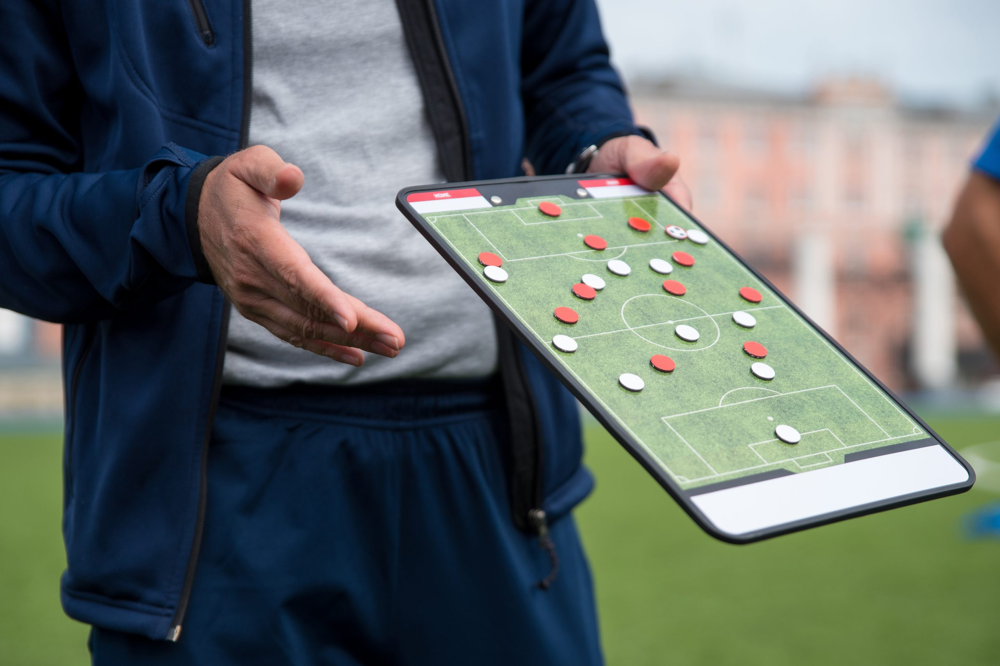

La táctica en el Fútbol
La táctica en fútbol es la herramienta para diferenciarse del entrenador, es su toque personal, que imprime al equipo sobre otros modelos de juego planteados por otros entrenadores.
Fundamentos tácticos ofensivos con sus respectivos principios tácticos.
RITMO DE JUEGO: es la forma de trasladar y/o conducir el balón entre los jugadores.
AMPLITUD OFENSIVA: se refiere a los desplazamientos de los jugadores en el plano horizontal hacia las líneas de banda.
PROFUNDIDAD OFENSIVA: son los desplazamientos de los jugadores en el plano vertical.
SUPERIORIDAD NUMÉRICA: desplazamientos de los jugadores hacia la zona donde se va a jugar el balón para generar ventaja de su presencia en otra zona.
